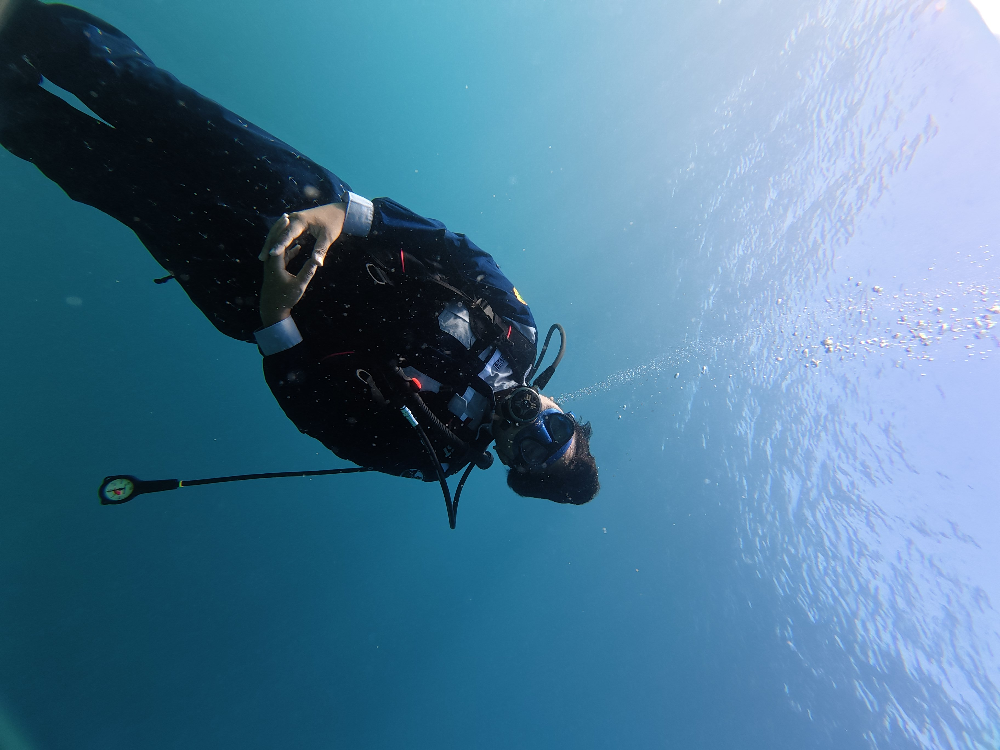
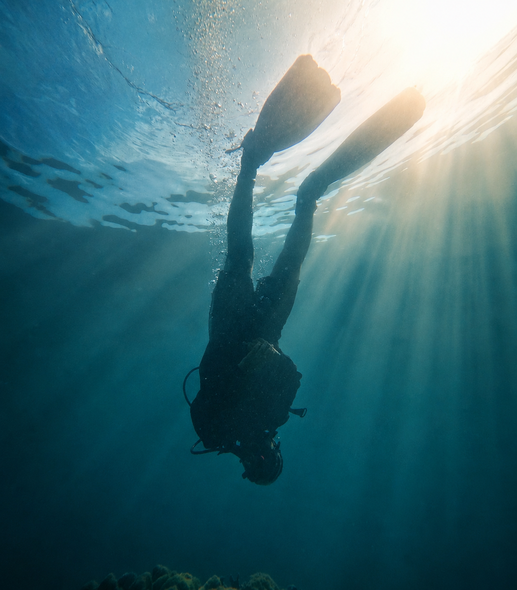
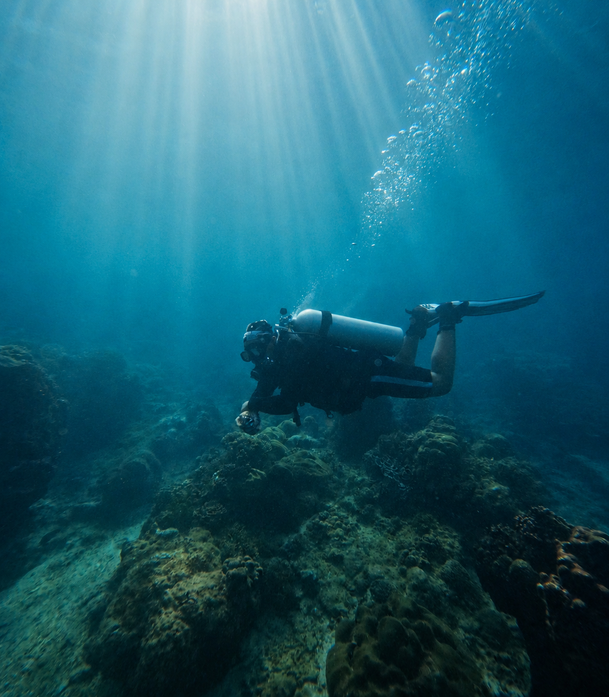
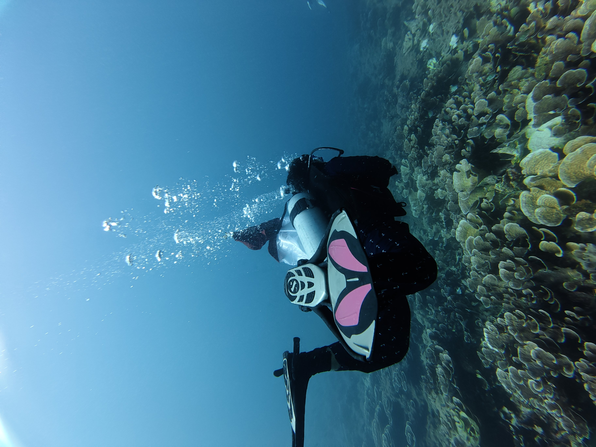
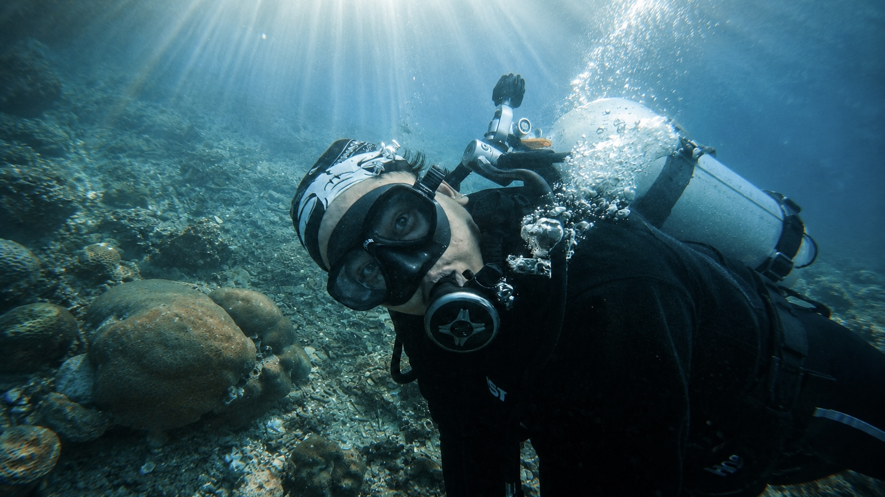
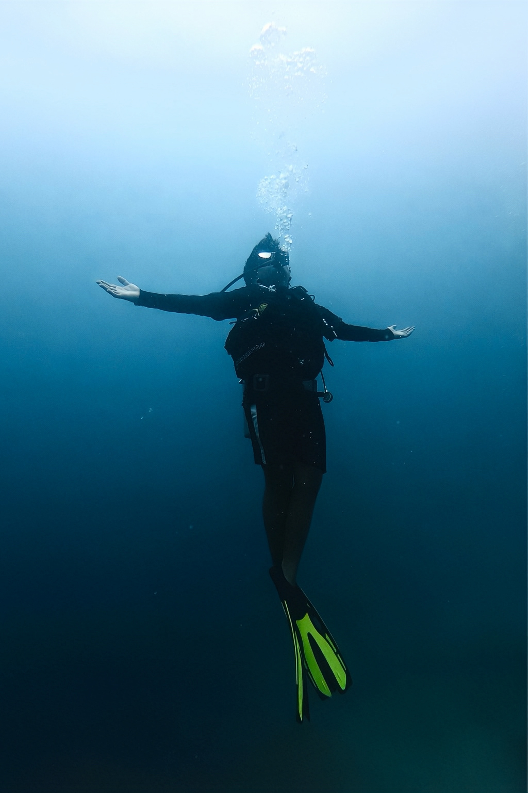
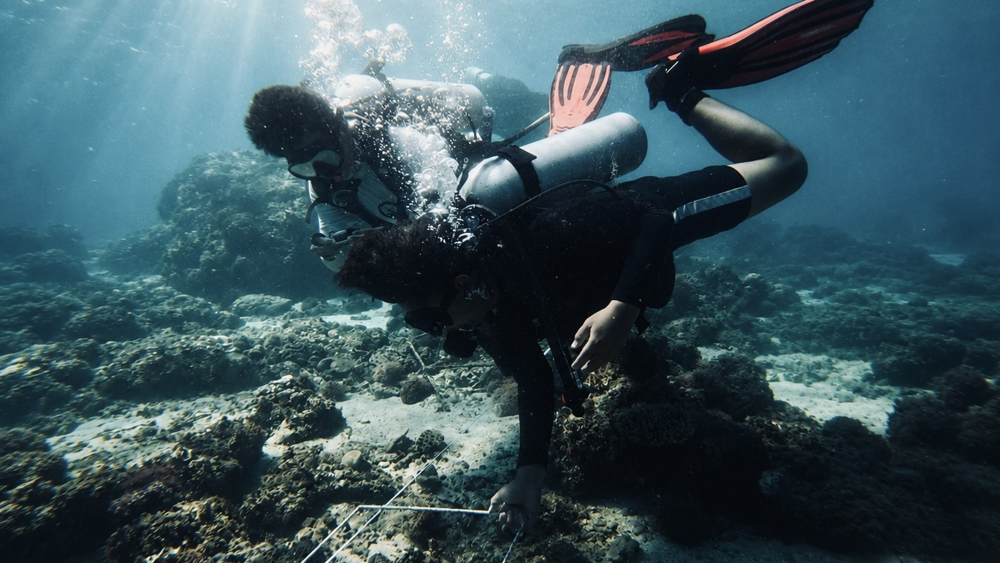
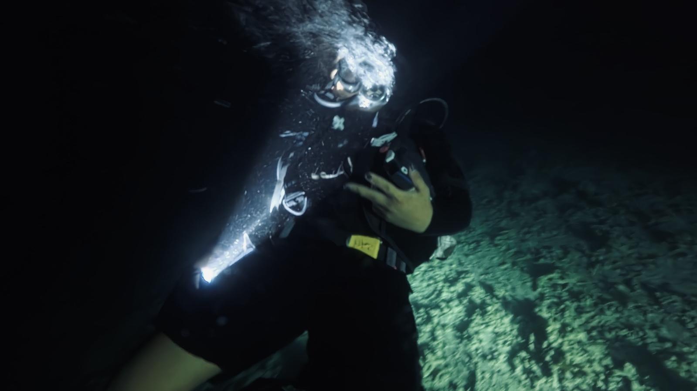
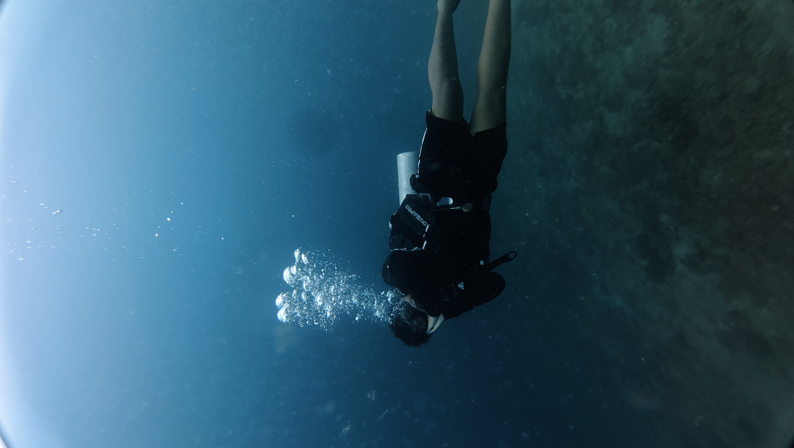
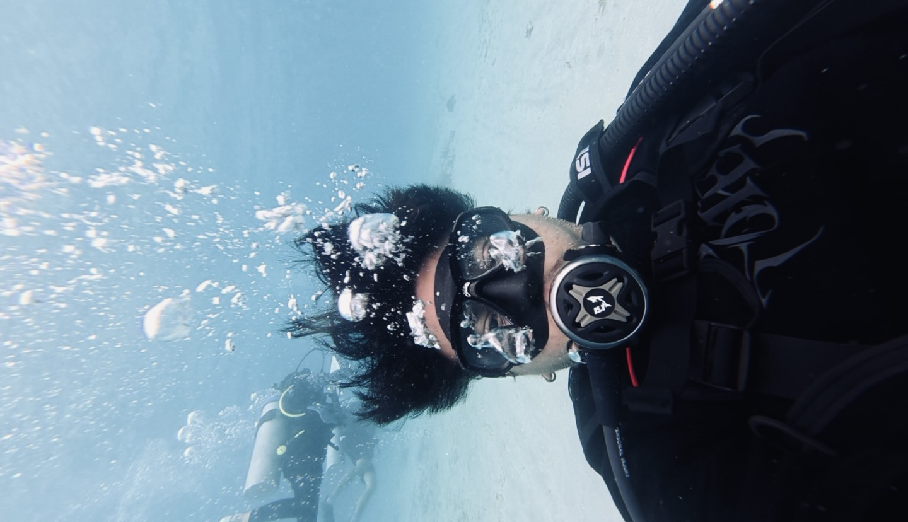

View Log
Deep Water
Looking Up
Tidak semua perjalanan tentang seberapa jauh kita melangkah.
descending into the deep

The ocean keeps more stories than we can imagine. Through diving, exploration, and photography — I seek to understand every detail, from the smallest life between the corals to the ecosystems that shape the balance of the sea.



Menemukan kehidupan yang jarang terlihat, dan memahami bahwa laut menyimpan lebih banyak cerita daripada yang bisa kita bayangkan.
Melalui diving, eksplorasi, dan fotografi, saya berusaha memahami setiap detailnya dari kehidupan kecil di antara karang hingga ekosistem yang membentuk keseimbangan laut.
Karena semakin jauh kita mengenal laut, semakin besar alasan kita untuk menjaganya.

Some stories are
Ada keindahan yang tidak membutuhkan banyak kata.
Cahaya matahari yang menembus birunya air.
Every expedition tells a story.

Tidak semua perjalanan tentang seberapa jauh kita melangkah.

The people. The stories.

Setiap koordinat menyimpan kenangan.
THE PLACES. THE PEOPLE. THE STORIES.
Setiap perjalanan menjadi bagian dari cerita yang masih terus ditulis.Klik foto untuk melihat log detail penyelaman & resolusi penuh.

Ada keindahan yang tidak membutuhkan banyak kata.
Gerakan ikan di antara terumbu karang, hingga keheningan yang hanya bisa ditemukan di bawah permukaan.
